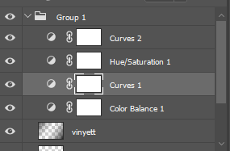
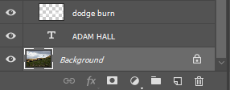

The photo shown above was taken at Baitings Resevoir, Yorkshire.
I editted the Photograph with multiple tools, one being Photoshop's Camera Raw Lighting Edittor, adding artifical shadows and altering saturation and brightness levels.

The luminance of the photograph for yellow and hreen lowered via the camera raw tool so the levels of over-exposed light were reduced on the yellow and green shades of grass.
Added to this I increased the saturation of the yellow and green grass, as the over-exposed light took away some natural green and yellow lighting I also de-hazed the photograph.
In Photoshop itself I added a Vinyett layer which darkens the bottom left and top right corners, the Vynyett was added so that photograph had shadows, the aim of the Photograph was to have detailed shadows and lighting mixed with the symmetry. The curve layers serve to increase the dark areas of the photograph as in the initial photograph they are too low.

The dodge burn layer adds white lines of light to the photograph, which I tried to make in relation to the way the sun was angled to the landscape in the photograph at the time of day when taking this photograph.
All in all, I am quite happy with how this photograph turned out, I wasn't sure how this Photograph was going to look while editting it, but the colour pallette is very diverse and complex, a long with the emphaised use of shadows.